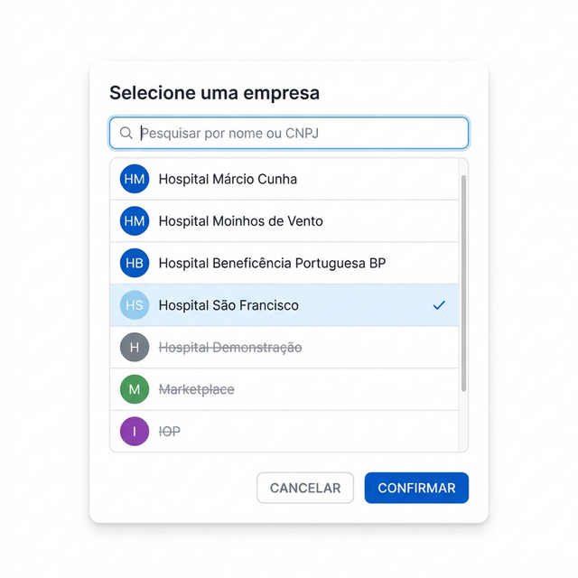
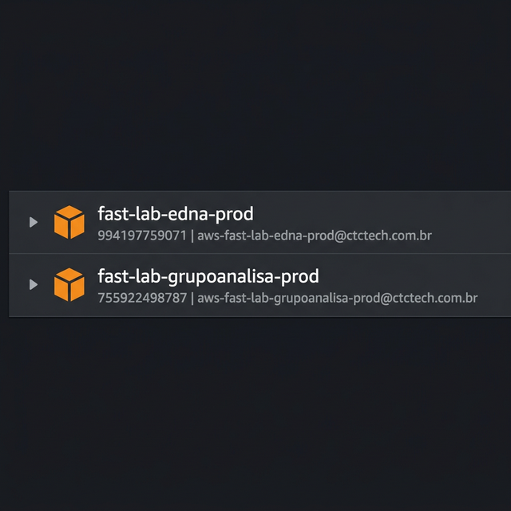
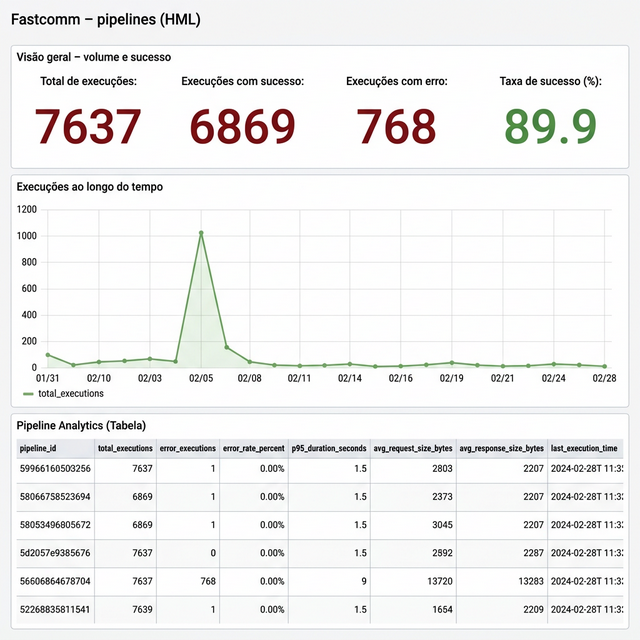
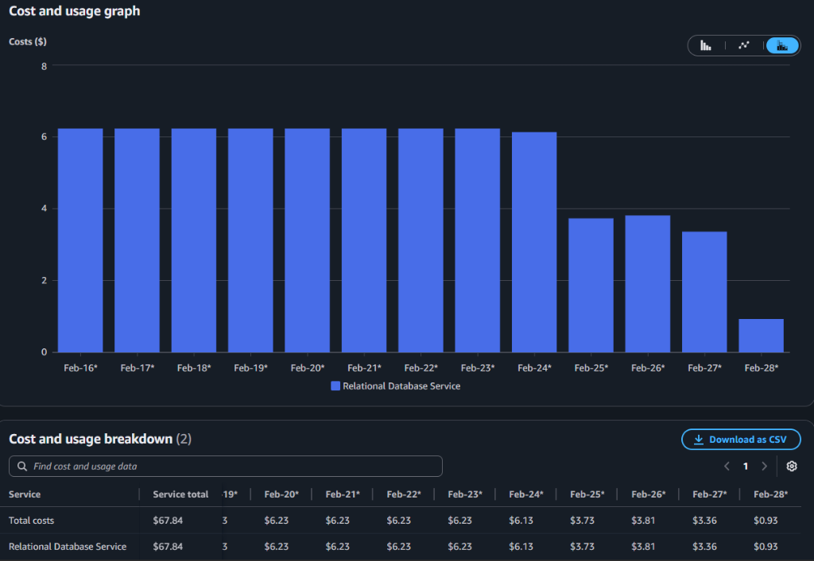
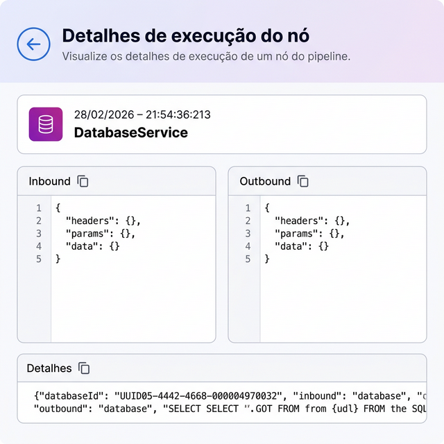
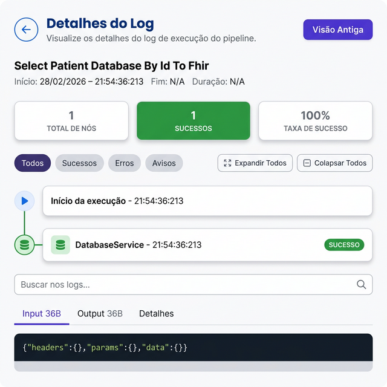
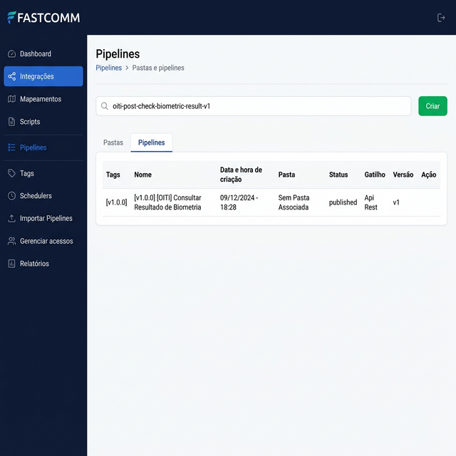

📋 Fechamento Fastcomm Fevereiro
Índice
📌 Desempenho Yago
| Mês | Horas AWS | Demandas Fastcomm | Total Mensal |
|---|---|---|---|
| Dezembro | 132h 33min | 35h 52min | 168h 25min |
| Janeiro | 85h 30min | 65h 00min | 150h 30min |
| Fevereiro | 40h 02min | 49h 00min | 89h 02min |
| Total | 258h 05min | 149h 52min | 407h 57min |
📌 Distribuição Percentual
- 63% das horas dedicadas à AWS
- 37% em Demandas Fastcomm
☁️ Análise Detalhada – Backlog AWS
🔹 Provisionamento de Infraestrutura
| Mês | Horas |
|---|---|
| Dezembro | 82h 23min |
| Janeiro | 68h 30min |
| Fevereiro | 09h 30min |
| Total | 160h 23min |
🔹 Outras Entregas AWS
- Mapeamento e Otimização de Custos AWS: 44h 40min Dezembro
- Mapeamento das aplicações AWS: 05h 30min Dezembro
- AWS - Desativação de Ambiente DEMO: 17h 00min Janeiro
- Migração para Graviton (ARM/AWS): 30h 32min Fevereiro
🎯 Principais Entregas Estratégicas
- Estruturação e organização da infraestrutura AWS
- Otimização de custos (ação com impacto financeiro direto)
- Migração para arquitetura Graviton (modernização e potencial redução de custo/performance)
- Desativação de ambiente legado (redução de desperdício)
💻 Demandas Fastcomm
- Funcionamento de Relatórios On-premise: 35h 52min Dezembro Moinhos
- Erro no nó de Foreach (SOAP): 35h 30min Janeiro
- Refinamento: 12h 30min Janeiro
- Ajuste de Visualização de Logs: 06h 30min Janeiro
- Esteira de CI/CD (Continuous Deployment): 06h 00min Janeiro
- Atualização GitBook: 09h 30min Jan: 04h 30min Fev: 05h 00min
- Correção de Front do Engine: 41h 30min Fevereiro
- Timeout no nó SOAP: 02h 30min Fevereiro
☁️ Case: Otimização de Custos
📌 Custo Desenvolvedor Interno
- Valor hora: R$ 69,00
- Horas AWS: 258h 05min
- Custo AWS aproximado: 258h x R$ 69 = R$ 17.802,00
📌 Custo Consultor DevOps Externo (Leonardo)
- Valor hora: R$ 95,00
- Para mesma carga horária (258h): 258h x R$ 95 = R$ 24.510,00
📌 Custo Consultor Especialista em Cloud Externo (Rômulo)
- Valor hora: R$ 150,00
- Para mesma carga horária (258h): 258h x R$ 150 = R$ 38.700,00
📊 Economia Gerada
- vs. Consultor DevOps (Leonardo): R$ 24.510 – R$ 17.802 = R$ 6.708,00 de economia ↓ 27%
- vs. Consultor Especialista Cloud (Rômulo): R$ 38.700 – R$ 17.802 = R$ 20.898,00 de economia ↓ 54%
- 👉 Dependendo do perfil contratado externamente, a economia gerada por ter um profissional interno representa entre R$ 6.708 e R$ 20.898 no período.
☁️ Case: Otimização de Custos – Conta HML (Homologação)
Um exemplo concreto da importância do apoio de Yago Costa na frente de infraestrutura é a otimização da conta AWS de Homologação (HML). Abaixo, os dados reais extraídos do AWS Cost Explorer comparando Novembro/2025 (antes das otimizações) com Fevereiro/2026 (após as ações de melhoria).
📊 Comparativo de Custos por Serviço – Top 10 Maiores Reduções
📋 Resumo Geral da Conta HML
| Métrica | Valor |
|---|---|
| Custo Total Nov/2025 | USD $2.293,92 |
| Custo Total Fev/2026 | USD $1.557,41 |
| Economia Realizada | -USD $736,51 (−32,11%) |
🏆 Destaques de Otimização
| Serviço | Antes (Nov/25) | Depois (Fev/26) | Redução |
|---|---|---|---|
| Elastic File System | $117,86 | $0,36 | −99,69% |
| Confluent Kafka | $59,53 | $0,00 | −100% |
| S3 | $15,06 | $4,19 | −72,18% |
| CloudWatch | $64,03 | $20,25 | −68,37% |
| ECR | $19,69 | $7,74 | −60,69% |
| GuardDuty | $48,20 | $23,46 | −51,33% |
| EC2 Instances | $431,24 | $232,38 | −46,11% |
| EC2 - Other | $251,84 | $145,59 | −42,19% |
📈 Projeção de Economia Anual – Conta HML
| Cenário | Custo Mensal Estimado | Custo Anual 2026 (12 meses) | Economia vs. Custo Original |
|---|---|---|---|
| ❌ Sem otimização (baseline Nov/25) | $2.293,92 | $27.527,04 | — |
| ✅ Mantendo nível atual (Fev/26) | $1.557,41 | $18.688,92 | −$8.838,12 (−32,1%) |
| 🚀 Com +10% de otimização adicional | $1.401,67 | $16.820,04 | −$10.707,00 (−38,9%) |
📈 Avaliação de Desempenho
🔎 Pontos Fortes
- Assumiu responsabilidade em área fora do core principal.
- Evolução técnica em infraestrutura AWS.
- Entregas com impacto direto em:
- Redução de custo cloud
- Modernização de arquitetura
- Organização de ambiente
- Boa distribuição entre sustentação e evolução.
🚀 Entregas Fastcomm
📅 Janeiro 2026
| # | Entrega | ⏱️ Horas |
|---|---|---|
| 9746 | [Débito técnico][1.5] Logs - Melhorias | 201h30 |
| 9519 | [Débito
técnico]
Inativação de cliente Fastcomm
Preview da funcionalidade:  |
07h30 |
| 9877 | [Bug] Erro ao usar o transformer de json para xml em homologação. Cliente Analisa | 06h00 |
| 9438 | [Bug] Erro ao gravar log em pipeline com choice v2 ONPREMISE | 62h30 |
| 9900 | [Bug] Erro ao usar o nó de foreach para realizar envios soap | 37h30 |
| 9800 | Contas provisionadas:  |
24h10 |
| 9677 | [Feature] Atualização do Link de Ajuda para o GitBook | 09h30 |
| 9741 | Relatórios – Node Analytics | 3h00 |
| 9742 | Relatórios – Fluxo Detalhado de Execução | 3h00 |
| 9740 |
Relatórios –
Pipeline Analytics
Dashboard Pipeline Analytics – HML:  |
3h00 |
| 9738 | Relatórios – KPIs Estratégicos | 3h00 |
| 9739 | Relatórios – Gráficos de Tendência (Linha do Tempo) | 3h00 |
| 9876 | Ritos – Janeiro/2026 | 53h30 |
| 9939 | [Gestão – Team Lead] – Janeiro/2026 | 84h00 |
📅 Fevereiro 2026
| # | Entrega | ⏱️ Horas |
|---|---|---|
| 10042 | AWS Cost Explorer – RDS (Evidência):  |
20h00 |
| 9956 | [Débito técnico] Popular request_size e response_size no ClickHouse para Observabilidade de Pipelines | 15h00 |
| 9922 | [Engenharia] Padronização e Evolução da Esteira de Continuous Deployment (CD) | 162h00 |
| 9957 | [Bug] execution_logs.realm está vindo NULL para 100% das execuções | 07h30 |
| 9857 |
[Feature]
Atualização da Tela de Busca de Logs (Nova Estrutura de Log)
Comparativo Antes × Depois: ANTES  DEPOIS  |
43h00 |
| 9995 | [Bug] Pipelines incorretos no realm='cassems' em execution_logs (ClickHouse) | 67h00 |
| 6626 |
[Feature]
Buscar pipelines por path
Busca por path do pipeline:  |
8h00 |
| 7071 | [Débito técnico][Segurança] Restrição de Acesso a APIs Não Publicadas ou em Draft | 09h30 |
| 10011 | [Bug] Erro ao realizar testes em sequência no ambiente onpremisse (Moinhos) | 30h30 |
| 9787 | [Bug] Correção de ordenação e validação obrigatória no front do Engine | 48h00 |
| 9790 | [Débito técnico] Funcionamento da tela de relatórios no on-premise | 35h52 |
| 10005 | 52h32 | |
| 10041 | [Gestão – Team Lead] – Fevereiro/2026 | 121h19 |
| 9945 | Ritos – Fevereiro/2026 | 37h30 |
| 8905 | [Feature] Novo tipo de entrada para pipeline Consume | 124h30 |
| 9836 | [Feature] Fluxo de exceção | 15h00 |
☁️ Atuação TL - AWS
Automação de Custos – RDS Office Hours
Implementação de automação para desligamento programado de instâncias RDS fora do horário comercial.
Projeção de Economia — RDS Office Hours
⛔ Antes
Custo mensal RDS
$186,90
$6,23/dia
instâncias 24/7 · fonte: AWS Cost Explorer
✅ Depois
Custo mensal RDS
$108,90
$3,63/dia
office hours · média Feb/25–27
💰 Economia
Redução mensal
$78,00
$2,60/dia economizados
−41,7% no custo RDS
Economia Diária
$2,60
Economia Mensal
$78,00
Economia Anual 2026
$936,00
Ajuste em Anomalias de Custos
Identificação e correção proativa de anomalias de custos detectadas no monitoramento contínuo da conta AWS.
CloudWatch Logs – Ajuste de Retenção Jan/2025
Redução de retenção de logs em 7 log groups da conta PDR, otimizando armazenamento e custos do CloudWatch.
| Log Group | Antes | Depois |
|---|---|---|
| /ecs/notifications-service | 3 meses | 14 dias |
| /ecs/engine-nest-api-cassems | 3 meses | 30 dias + export S3 |
| /ecs/engine-nest-api-aa | 3 meses | 30 dias |
| /ecs/apps-api | 3 meses | 30 dias |
| lya-health-prod (AIRT Stack) | 3 meses | 2 meses |
| /ecs/orchestrator-api | Revisado – mantido | |
| /ecs/log-service | Revisado – ajustado | |
AWS Config – Otimização de Recording Dez/2025
Reclassificação do modo de gravação dos recursos por criticidade:
🔴 Continuous (críticos)
SecurityGroup, NetworkACL, KMS, CloudTrail, IAM (Role/Policy)
🔵 Daily (infraestrutura)
VPC, Subnet, RouteTable, EC2, RDS, S3, EFS, EKS, ECS
Amazon GuardDuty – Desativação de Monitoramento Desnecessário Dez/2025
Desativação de features de runtime monitoring cobradas por vCPU nas contas HML e DEV:
| Feature | Ação | Contas |
|---|---|---|
| Runtime Monitoring (EC2, Fargate, EKS) | Disable PaidEC2vCPU / PaidFargatevCPU | HML + DEV |
| RDS Login Activity | Disable PaidRDSvCPU | HML + DEV |
| Lambda Network / Malware Protection | Disable | HML + DEV |
Incidente e Apoio aos Times
API Analiza – Timeout em Integração SOAP
Objetivo: Diagnosticar falha de timeout na integração SOAP com API externa (Shift Cloud), validando aplicação, conectividade e infraestrutura AWS.
Escopo da validação (3 camadas)
- Aplicação: Logs NestJS, confirmação de erro por timeout, sem falha de auth/payload
- Conectividade: SSM, testes DNS/TCP/HTTPS, requisição SOAP via CLI, análise de handshake
- Infraestrutura: Security Groups, Network ACLs, Route Tables, NAT Gateways, multi-AZ
🧠 Diagnóstico Final
✔ Aplicação, infraestrutura e segurança interna validadas – sem bloqueios internos.
⚠️ Causa raiz: Bloqueio do IP de origem no firewall do fornecedor externo. IPs públicos de saída identificados e informados ao cliente para liberação.
API Humanos – Timeout
Suporte e investigação de incidente de timeout na API do cliente Humanos. Análise de infraestrutura e apoio ao time de desenvolvimento na resolução.
🔄 Plano de Ação – Reestruturação do Time
Proposta estratégica de reestruturação do quadro técnico, visando otimizar custos e alinhar competências às demandas atuais e futuras do produto.
Cenário Atual – Saída
Desenvolvedor Sênior
Perfil 1
R$ 16.739,20
Desenvolvedor Sênior
Perfil 2
R$ 16.739,20
REESTRUTURAÇÃO PROPOSTA
Cenário Proposto – Entrada
Desenvolvedor Multifunção
PERFIL ESTRATÉGICO
~R$ 14.000 – R$ 18.000
Analista AWS Junior
INFRAESTRUTURA CLOUD
R$ 6.000 – R$ 8.000
Yago Costa
PROMOÇÃO → SÊNIOR I
+ R$ 1.400
💰 Comparativo Financeiro
| Cenário Atual | Proposto (Mín.) | Proposto (Máx.) | |
|---|---|---|---|
| Perfil 1 | Dev Sênior – R$ 16.739,20 | Dev Multifunção – R$ 14.000 | Dev Multifunção – R$ 18.000 |
| Perfil 2 | Dev Sênior – R$ 16.739,20 | Analista AWS Jr – R$ 6.000 | Analista AWS Jr – R$ 8.000 |
| Promoção Yago → Sênior I | — | + R$ 1.400 | + R$ 1.400 |
| Total Mensal | R$ 33.478,40 | R$ 21.400,00 | R$ 27.400,00 |
| Custo Anual | R$ 401.740,80 | R$ 256.800,00 | R$ 328.800,00 |
| Economia Mensal | — | R$ 12.078,40 | R$ 6.078,40 |
| Economia Anual | — | R$ 144.940,80 (−36,1%) | R$ 72.940,80 (−18,2%) |
🎯 Benefícios Estratégicos da Reestruturação
IA & Automação
Testes automatizados com IA, ganho de produtividade e qualidade
Infraestrutura Dedicada
Profissional focado em AWS + Terraform, reduzindo dependência externa
Otimização Contínua
FinOps ativo, redução de custos cloud e governança de recursos
Versatilidade
Dev multifunção absorve demandas de desenvolvimento, testes e inovação
📌 Conclusão do Plano de Reestruturação
A proposta substitui 2 desenvolvedores sênior (R$ 33.478,40) por um time mais estratégico e alinhado às demandas atuais:
- 1 Desenvolvedor Multifunção (Dev + Testes + IA) – custo alvo similar ao atual
- 1 Analista AWS Junior (Terraform + DevOps) – R$ 6.000 a R$ 8.000
Essa reestruturação permite manter ou reduzir o custo operacional atual enquanto agrega competências estratégicas em IA, automação de testes e infraestrutura cloud, áreas críticas para a evolução do produto Fastcomm.
🏢 Decisão Diretoria e CBO
Pontos levantados para tomada de decisão após análise do plano de reestruturação:
⚠️ Pontos de Atenção
- Curva de aprendizado pode ter impactado tempo de execução.
- Necessidade de capacitação contínua em DevOps/Cloud.
- Avaliar formalização de papel híbrido (Dev + Cloud).
-
Treinar os desenvolvedores para
atuar com demandas DevOps
Capacitação interna para reduzir dependência de perfis externos e aumentar autonomia do time em tarefas de infraestrutura e entrega contínua.⚡ Ponto Muito Importante
Após definição, formalizar via e-mail para todos os gestores.
🧠 Análise Estratégica
Se a estratégia da empresa for:
- 🔹 Reduzir dependência de consultoria externa
- 🔹 Internalizar conhecimento de infraestrutura
- 🔹 Otimizar custo cloud
→ O investimento no desenvolvimento técnico deste profissional é altamente justificável. Caso contrário, manter apenas consultor externo elevaria o custo operacional em mais de 50%.
🗺️ Roadmap Fastcomm 2.0
Acesse o Roadmap Completo
Planejamento estratégico de evolução do produto Fastcomm
Roadmap Fastcomm 2.0📆 Programação da Semana
- Estimar 1.5 no On-Premise
- Análise de Performance
- Deploy - Correções no HMV
- TL – Montar Grafana – Cliente Analiza
- TL – Subir Backlogs no Projeto Fastcomm 2.0 no IKV
- TL – Listagem de features existentes